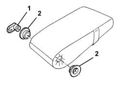
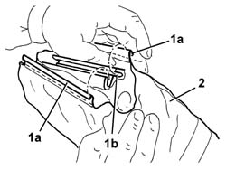

7050B22 RIVESTIMENTO DELL'APPOGGIABRACCIA DEL SEDILE POSTERIORE - S.R. AD APPOGGIABRACCIA STACCATO
- Path
- Procedures > 70 FITTINGS > 7050 REAR SEATS > 7050B REAR SEAT HEAD RESTRAINT/ARM REST > 7050B22 RIVESTIMENTO DELL'APPOGGIABRACCIA DEL SEDILE POSTERIORE - S.R. AD APPOGGIABRACCIA STACCATO
- Kind
- repair procedure (removal / refitting; the operation number is the code)
- Applies to
- all engines; all production periods
- Interactive page
- https://sloeber94.github.io/elrnDB-aGt/en/#/125001956
Applies to: all engines; all production periods
 Removing
Removing
 Refitting
Refitting1. Release the side retainer.
2. Remove the bushes.

Applies to: all engines; all production periods
1. Prise off the edges (1a) from the retaining grooves (1b).
2. Remove the trim.

Applies to: all engines; all production periods
Refitting
RemovingCheck that the cover is undamaged.
Fit the cover on the padding and fit the edges in the retaining grooves.
Fit the bushes.
Fit the side retainer.